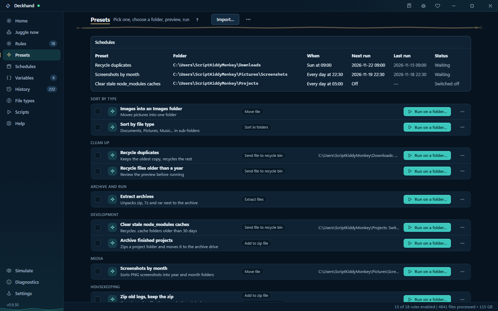
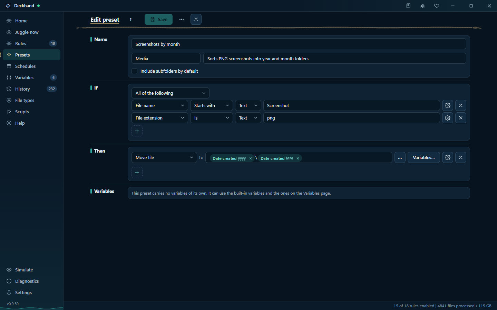
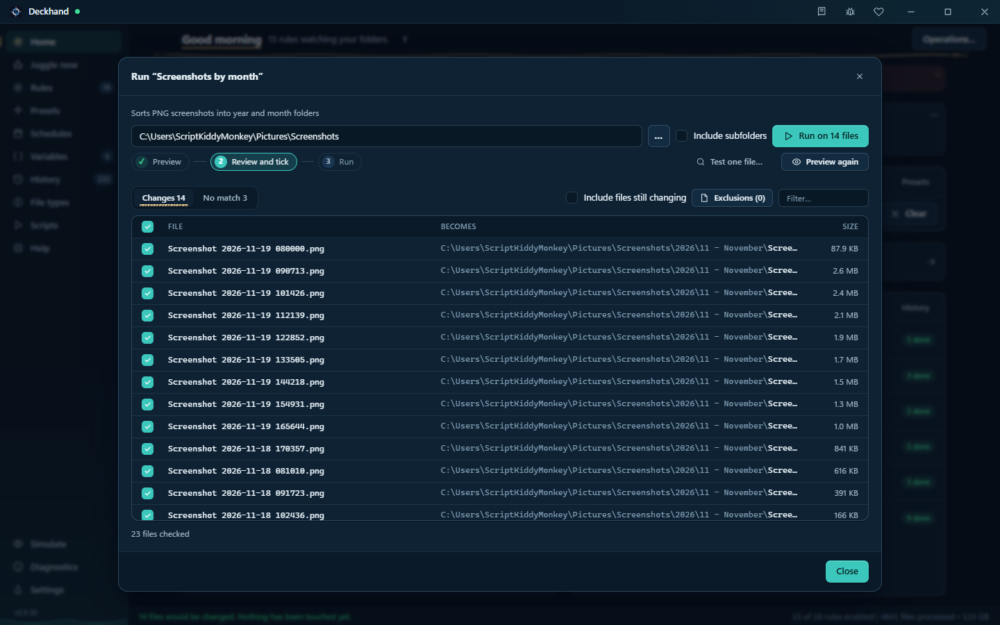

Presets
Saved tidy-ups that are not tied to one folder, which you run on a folder you choose.
A preset is a saved set of conditions and actions that is not tied to one folder. You pick a folder when you run it, preview what would happen, then run.
The Presets page lists the built-in presets and your own, in groups such as Sort by type, Clean up and Development. Each row shows its actions and has a Run on a folder... button. The Schedules box at the top lists the presets that run by themselves, with the folder, the time, the next and last run and the status.


Preset or rule?
| Rule | Preset | |
|---|---|---|
| Folder | Fixed watch folders | Chosen each time you run it |
| Runs | All the time, or on a schedule | When you start it, or on a schedule |
| Use it for | Keeping a folder tidy | One-off or repeatable jobs on any folder |
Use Make a rule from this preset to turn a preset into a rule.
A preset is edited with the same widgets as a rule, but it has no watch folder. The screenshot is the preset Screenshots by month: a name, a group and a description, the conditions (a file name that starts with Screenshot and the extension png) and a Move file action to a year and month folder made of the Date created yyyy and Date created MM variables. Include subfolders by default is not ticked.


Run a preset on a folder
The screenshot shows Screenshots by month run on PicturesScreenshots from the Home page. The preview is open: 14 changes ticked, each with the year and month folder it would move to, and 3 files with no match. Run on 14 files starts the run.


- Open Presets and choose Run on a folder.
- Choose the folder, and tick Include subfolders if you want them.
- Press Preview. You see the same preview as for a rule.
- Tick the files you want, then press Run. The Becomes column shows where each file will end up.
Every run can be undone from the same window or from History. Nothing changes until you press Run.
Each time you open Run on a folder, it starts fresh. Closing a preset that has preview results asks before it discards them. Preview work shows in Diagnostics with the Preview trigger. Only actions you actually run are recorded in History.
Built-in presets
Built-in presets can be edited. Reset to original brings the original back.
Scheduling a preset
A preset can run on a schedule. Scheduled presets appear on the Schedules page alongside rules. See Rules, folders and watching.
Sharing
Presets can be exported and imported. Imported rules start disabled so you can review their paths and actions first. See Writing rules with an AI assistant for the import format.